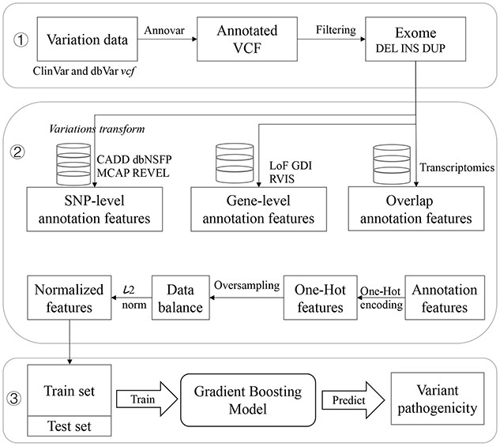

Publication
SVPath: an accurate pipeline for predicting the pathogenicity of human exon structural variants
Abstract
Although there are a large number of structural variations in the chromosomes of each individual, there is a lack of more accurate methods for identifying clinical pathogenic variants. Here, we proposed SVPath, a machine learning-based method to predict the pathogenicity of deletions, insertions and duplications structural variations that occur in exons. We constructed three types of annotation features for each structural variation event in the ClinVar database.
First, we treated complex structural variations as multiple consecutive single nucleotide polymorphisms events, and annotated them with correlation scores based on single nucleic acid substitutions, such as the impact on protein function.
Second, we determined which genes the variation occurred in, and constructed gene-based annotation features for each structural variation.
Third, we also calculated related features based on the transcriptome, such as histone signal, the overlap ratio of variation and genomic element definitions, etc.
Finally, we employed a gradient boosting decision tree machine learning method, and used the deletions, insertions and duplications in the ClinVar database to train a structural variation pathogenicity prediction model SVPath. These structural variations are clearly indicated as pathogenic or benign.
Experimental results show that our SVPath has achieved excellent predictive performance and outperforms existing state-of-the-art tools. SVPath is very promising in evaluating the clinical pathogenicity of structural variants. SVPath can be used in clinical research to predict the clinical significance of unknown pathogenicity and new structural variation, so as to explore the relationship between diseases and structural variations in a computational way.

Citation
Yang Y, Wang X, Zhou D, et al. SVPath: an accurate pipeline for predicting the pathogenicity of human exon structural variants[J]. Briefings in Bioinformatics, 2022, 23(2): bbac014.